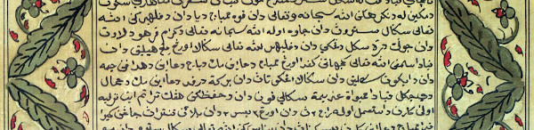
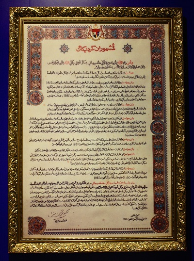

Mengenai Jawi & Rumi
Sistem Tulisan Bahasa Melayu. Bahasa Melayu memiliki dua sistem tulisan yang masih digunakan dalam zaman moden: tulisan Rumi yang diromanisasi dan tulisan Jawi yang berasaskan Arab. Kini, Rumi jauh lebih lazim digunakan berbanding Jawi, namun tulisan Jawi tetap terus dihidupkan dalam pelbagai urusan budaya, keagamaan, dan pentadbiran. Di beberapa wilayah Malaysia dan di Brunei, tulisan ini diiktiraf sebagai tulisan rasmi bersama Rumi. Jawi merupakan tulisan utama dalam penulisan Bahasa Melayu dari sekitar abad ke-14 hingga ke-20. Sebelum itu, tulisan Melayu Kuno iaitu Kawi dan Rencong berasal daripada pengaruh Sanskrit. Huruf-huruf Jawi sebahagian besarnya selari dengan huruf Arab, dengan beberapa penyesuaian dilakukan; terutamanya penambahan huruf-huruf baharu untuk mewakili bunyi yang tiada dalam bahasa Arab. Ketiadaan vokal yang jelas kadangkala menimbulkan kekaburan makna yang tidak wujud dalam Rumi. Sebagai contoh, ڤيلو boleh merujuk kepada pilu (perasaan sedih) atau pilau (sejenis perahu), dan pembaca akan menentukan sebutannya berdasarkan konteks. Begitu juga, ejaan Rumi yang tunggal mungkin mempunyai beberapa ejaan Jawi, seperti merah yang boleh ditulis sebagai مره atau ميره; perbezaannya ialah bentuk kedua menggunakan ي ("ya") untuk mewakili vokal *e* dalam merah.
| چ/t͡ʃ/ | ڠ/ŋ/ | ڤ/p/ | ݢ/g/ | ۏ/v/ | ڽ/ɲ/ |
Kebangkitan Jawi dan Silsilah Intelektualnya. Kebangkitan tulisan Jawi seiring dengan kedatangan Islam, lantas menerangkan mengapa penggunaannya pada hari ini kerap dikaitkan dengan konteks keagamaan. Namun, tulisan ini tidak secara semulajudinya terikat dengan Islam atau bahasa Arab, sebagaimana Rumi tidak secara zatnya terhubung dengan tradisi Eropah mana sekali pun. Setelah penerimaannya, Jawi berkembang menjadi sistem tulisan yang terunggul di Asia Tenggara maritim; menjadi aksara pilihan bagi dokumen undang-undang, perutusan antara raja-raja, perjanjian perdagangan, rekod cukai, risalah keagamaan, serta karya kreatif dan bukan fiksyen. Salah satu genre penulisan yang menggunakan tulisan ini ialah naskhah perubatan Melayu, yang dikenali dengan pelbagai nama seperti Kitab Tib, Kitab Obat-Obatan dan Kitab Mujarrabat. Naskhah-naskhah yang masih terpelihara menunjukkan bahawa tulisan ini digunakan untuk mencatatkan preskripsi perubatan yang merangkumi pelbagai tradisi keagamaan. Islam merupakan pengaruh utama dalam sistem perubatan ini, namun istilah untuk jampi dan mantera penyembuhan turut merujuk kepada dewa-dewi atau semangat daripada tradisi Hindu-Buddha dan kepercayaan animisme tempatan. Justeru, Jawi telah berfungsi sebagai wahana penzahiran teks pelbagai fungsi sekaligus mengungkapkan gagasan keagamaan yang majmuk.

Romanisasi Bahasa Melayu: Warisan Imperialisme Eropah. Peromanan bahasa Melayu berkemungkinan besar merupakan kesan daripada imperialisme Eropah di rantau ini. Antonio Pigafetta, pengembara Itali yang mengiringi penjelajah Portugis Ferdinand Magellan dalam pelayaran mengelilingi dunia, merupakan antara yang terawal menghasilkan senarai istilah Melayu menggunakan huruf Rumi, dengan memberikan maknanya dalam bahasa Itali pada awal abad ke-16. Lebih banyak senarai kosa kata berhuruf Rumi muncul selepas Portugis, dan kemudiannya Belanda serta British, mengukuhkan projek kolonial mereka di rantau ini. Berbeza dengan Jawi yang berkembang tanpa pusat autoritatif yang mengarah ejaan dan ortografi, pada awal abad kedua puluh, pihak berkuasa kolonial British dan Belanda masing-masing menyeragamkan ejaan Rumi melalui sistem ejaan Wilkinson dan sistem ejaan van Ophuijsen. Sistem-sistem ini dijadikan piawai untuk komunikasi dalam koloni-koloni tersebut, seterusnya menolak Jawi ke pinggiran. Peminggiran Jawi berterusan selepas zaman penyahjajahan, disokong oleh pemimpin-pemimpin terdidik Barat di Malaysia dan Indonesia yang mana sistem tulisan Rumi dianggap lebih berfaedah berbanding Jawi, yang mungkin akan menguntungkan golongan terpelajar Islam.

Kemerosotan Jawi dalam Pentadbiran Moden. Walaupun Pengisytiharan Kemerdekaan 1957 Malaysia ditulis dalam tulisan Jawi, sistem tulisan ini tidak lagi meluas penggunaannya dalam pentadbiran kerajaan. Kedudukan Rumi semakin dimartabatkan melalui Akta Bahasa Kebangsaan 1963 yang secara rasmi menetapkan Rumi sebagai sistem tulisan kebangsaan bagi bahasa Melayu. Jawi pun berundur ke sebalik tabir, hanya kekal dalam lingkungan sekolah-sekolah agama dan akhbar-akhbar bahasa khusus. Di Indonesia, perkembangan serupa turut berlaku; sistem tulisan Jawi hampir lenyap sama sekali dari dokumen rasmi, buku teks, dan penulisan kreatif di ruang awam menjelang tahun 1956. Seruan untuk mengembalikan tulisan Jawi sebagai sistem tulisan kebangsaan atau dalam buku teks sekolah muncul secara berkala di Malaysia - yang terkini pada tahun 2019 - di mana desakan sedemikian biasanya dikaitkan dengan agenda politik untuk pemelayuan negara. Namun sehingga kini, keupayaan membaca dan menulis Jawi merupakan kemahiran yang tidak dikuasai secara meluas oleh sekurang-kurangnya dua generasi warganegara di kedua-dua negara. Penukar Ruji Jawi-Rumi/Rumi-Jawi ini mencerminkan keperluan terhadap alat yang dapat menjadikan sistem tulisan ini boleh difahami oleh semua penutur bahasa Melayu, sekaligus memudahkan pembacaan sumber-sumber sejarah.
Rujukan
Melebek Abdul Rashid and Moain Amat Juhari, Sejarah Bahasa Melayu, (Kuala Lumpur: Utusan Publications and Distributors, 2006).
Alessandro Bausani, “The First Italian-Malay Vocabulary by Antonio Pigafetta,” East and West, 11:4 (1960), pp. 229-248.
James T. Collins, Malay, World Language: A Short History, (Kuala Lumpur: Dewan Bahasa dan Pustaka, 1998)
Kevin Fogg, “The standardisation of the Indonesian language and its consequences for Islamic communities,” Journal of Southeast Asian Studies, 46:1, (2015), pp. 86-110.
Andries Teeuw, “The history of the Malay language: A preliminary survey,” Bijdragen tot de taal-, land- en volkenkunde, 115:2, (1959), pp. 138-159